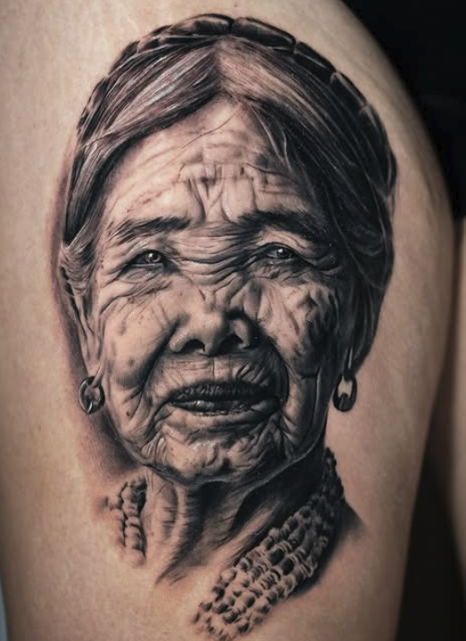

Realismo en negro y gris: contraste, luces y sombras

El realismo en negro y gris es uno de los estilos de tatuaje más impactantes cuando está bien trabajado. No depende del color para llamar la atención, sino de algo mucho más básico y potente: el contraste, las luces y las sombras.
En este estilo, cada zona del tatuaje tiene una función. Las partes más oscuras ayudan a dar profundidad, las zonas medias construyen volumen y las luces hacen que la imagen respire. Cuando todo esto está bien equilibrado, el tatuaje gana fuerza y se lee mucho mejor sobre la piel.
El contraste lo cambia todo
El contraste es lo que hace que un tatuaje no se vea plano. Si todo tiene el mismo tono de gris, la imagen puede perder fuerza y quedarse apagada. En cambio, cuando hay negros bien colocados, grises suaves y zonas de piel limpia, el diseño tiene más profundidad.
No se trata de oscurecer todo, sino de saber dónde meter intensidad y dónde dejar que la piel haga de luz. A veces, una zona sin tinta puede ser igual de importante que una sombra bien hecha.
Luces y sombras para crear volumen
En el realismo, las sombras ayudan a construir la forma. Son las que hacen que una cara, un animal o cualquier objeto parezca tener volumen y no ser solo una imagen plana.
Las luces, por otro lado, marcan los puntos donde la imagen recibe más claridad. En tatuaje, muchas veces esas luces se consiguen dejando respirar la piel, sin saturarla de tinta. Por eso es tan importante planificar bien la pieza antes de empezar.
La importancia de una buena referencia
Para trabajar realismo en negro y gris, la referencia es clave. Una buena imagen tiene que tener una iluminación clara, sombras definidas y suficiente calidad para poder entender bien los detalles.
No todas las fotos funcionan igual de bien para tatuar. Si una imagen está demasiado oscura, borrosa o sin contraste, puede ser difícil conseguir un resultado limpio. Por eso, elegir bien la referencia forma parte del proceso.
Un resultado limpio y duradero
Un buen realismo no es solo el que impresiona recién hecho. También tiene que estar pensado para curar bien y mantenerse legible con el tiempo. Por eso es importante no llenar todo de detalles diminutos ni dejar la pieza sin estructura. El equilibrio entre contraste, luces y sombras ayuda a que el tatuaje tenga presencia desde lejos y detalle cuando lo miras de cerca.
En resumen, el realismo en negro y gris funciona cuando la imagen tiene profundidad, intención y una buena lectura. No es solo copiar una foto: es traducirla a piel usando negro, gris, luz y sombra.